課後複習首頁第 3 週｜社會與道德發展
社會與道德發展：生態系統、心理社會與道德推理
上週的 Piaget 與 Vygotsky 著重個體的認知發展；本週轉向個體所處的社會脈絡，以及人格、道德與社會情緒的發展。內容依序為：Bronfenbrenner 的生態系統論；Erikson 的心理社會發展論，以及 Marcia 對青少年自我認同的補充；道德發展方面，從 Piaget 的「他律到自律」，到 Kohlberg 的三期六段論，再到 Gilligan 的女性視角；最後依學前、小學、中學三個階段，整理社會關係、自我概念與自尊的發展。
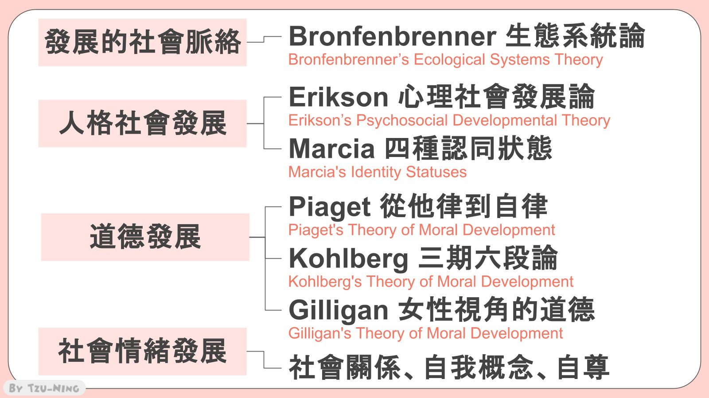
Bronfenbrenner 的生態系統論
布隆芬布連納（Urie Bronfenbrenner，1917–2005）生於俄羅斯，幼年移居美國，是美國發展心理學家。他於 1938 年取得康乃爾大學學士學位（心理學與音樂雙主修），1940 年取得哈佛大學教育學碩士，1942 年取得密西根大學發展心理學博士，之後長期任教於康乃爾大學，也是美國 Head Start（啟蒙計畫）的共同創辦人。他提出的生態系統理論（ecological systems theory），其理論圖由內而外一圈套著一圈，常被比喻像是俄羅斯娃娃。
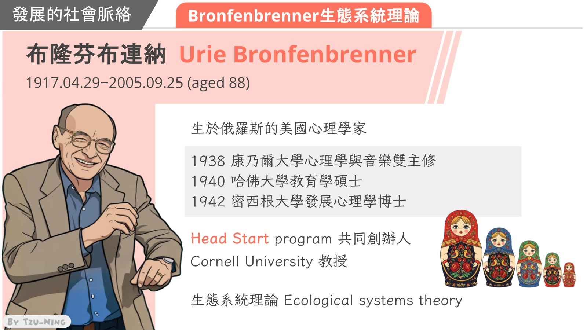
Bronfenbrenner 批評當時的心理學是在「研究兒童在陌生情境中與陌生大人在極短時間內的奇怪行為」：把兒童帶進陌生的實驗室，由不認識的研究者要求他們完成各種任務。他並非反對實驗，而是認為不能只看實驗；兒童在實驗室中的表現，可能與他在家庭、社區、學校與班級中的表現不同，研究應把兒童放回原本的生長環境來理解，也就是重視生態效度（ecological validity）。
生態系統理論認為，圍繞兒童的各個系統並非孤立，而是相互依存，一個系統的變動會連鎖影響其他系統。
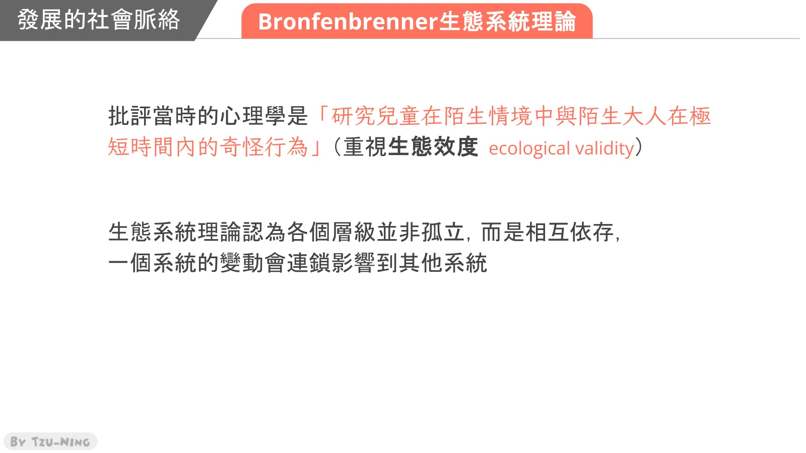
五個系統
- 微系統（microsystem）：個體直接參與的日常情境，及其中的人際互動，例如家庭、班級與同儕。
- 中介系統（mesosystem，又稱中系統）：個體所處不同微系統之間的連結，例如家庭與學校的溝通。父母與教師都是兒童的微系統，親師座談會中雙方的交流，會影響這個兒童。可以把 meso 聯想成「味噌」（miso）：家長與老師坐下來邊喝味噌湯、邊談孩子。
- 外系統（exosystem）：兒童未直接參與，但會影響其日常生活的情境，例如照顧者的工作制度：父母的職場要求接下來一個月都要加班，兒童雖未參與父母的工作，生活安排卻因此受到影響。
- 大系統（macrosystem，又稱巨系統）：文化中的價值、法律、制度與資源分配，形塑各層系統的運作。大系統是包圍所有系統的「隱形框架」，是抽象、宏觀的，例如社會崇尚「升學至上」還是「多元發展」、國家的性別平等法、稅制或社會福利等經濟制度，以及貧富差距等社會階級的現狀。
- 時間系統（chronosystem）：時間系統是 Bronfenbrenner 後來補充的概念，強調個人與環境隨時間的變化，包括生命歷程中的重要轉變與社會歷史事件，以及這些變化如何影響個體發展。例如，COVID-19 疫情期間，有些學生長時間無法與同班同學實體見面，學校也轉為遠距教學。這段經歷不僅影響了當時的學習與人際互動，也可能持續影響後續的教學方式，以及人們對線上學習的看法。
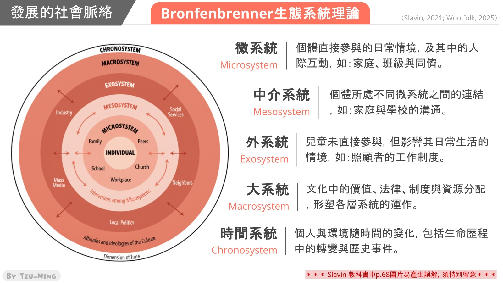
學習這個理論的關鍵，在於能根據情境描述的重點，判斷與哪一個系統較有關。例如：家庭對兒童的直接影響屬於微系統；父母與老師的交流屬於中系統；父母的工作壓力屬於外系統；一個社會的教育價值觀、文化信念與法律制度則屬於大系統。需要留意的是，同一事件可能同時涉及不同系統，關鍵在於描述強調的是哪個面向。例如，「國家發生重大經濟危機」可能涉及大系統的經濟環境；但如果描述的重點是孩子在成長過程中經歷經濟危機，家庭生活與教育環境隨時間改變，並影響其後續發展，則更能凸顯時間系統的概念。因此，判斷時間系統的關鍵，不只是影響持續多久，而是是否涉及生命歷程、歷史事件，以及個人與環境隨時間的變化。
Erikson 其人：「我是誰？」
艾瑞克森（Erik Erikson，1902–1994）是德裔美籍心理學家，提出心理社會發展論（psychosocial developmental theory）。許多學者的理論帶有自身成長經驗的影子，Erikson 也是如此：他一生追問的核心問題是「我是誰？」，這與他的身世密切相關。
Erikson 一生換過三個姓。他的母親出身丹麥的猶太望族，懷孕時已與丈夫分居，後來在德國法蘭克福生下他，他因此冠上母親丈夫的姓，名為 Erik Salomonsen；他的生父是誰則始終不明。之後母親改嫁，繼父 Theodor Homburger 收養了他，他改名為 Erik Homburger。母親與繼父都是猶太人，Erikson 卻是金髮碧眼：在學校，同學因他的猶太姓氏而排斥他；在猶太會堂，又有人因他的外表而不把他當成猶太人。在不同群體中都受到排斥，使他從小就對「我是誰」充滿疑惑。
Erikson 起初學的是藝術，年輕時在歐洲各地遊歷作畫，後來到維也納一所學校教藝術。學校與精神分析學者安娜・佛洛伊德（Anna Freud）——西格蒙德・佛洛伊德（Sigmund Freud）的女兒——關係密切；她看出 Erikson 對兒童的觀察與描述相當精闢，引導他進入兒童精神分析的領域。因此 Erikson 的理論受到 Sigmund Freud 與 Anna Freud 的影響，屬於新精神分析學派。移居美國、申請入籍時，他為自己取了新的姓氏 Erikson，「Erik Erikson」常被解讀為「艾瑞克是艾瑞克自己的兒子」，象徵他已找到自己。
Erikson 沒有學士學位，卻曾任教於哈佛大學、耶魯大學與加州大學柏克萊分校。1950 年，他出版了《童年與社會》（Childhood and Society）。
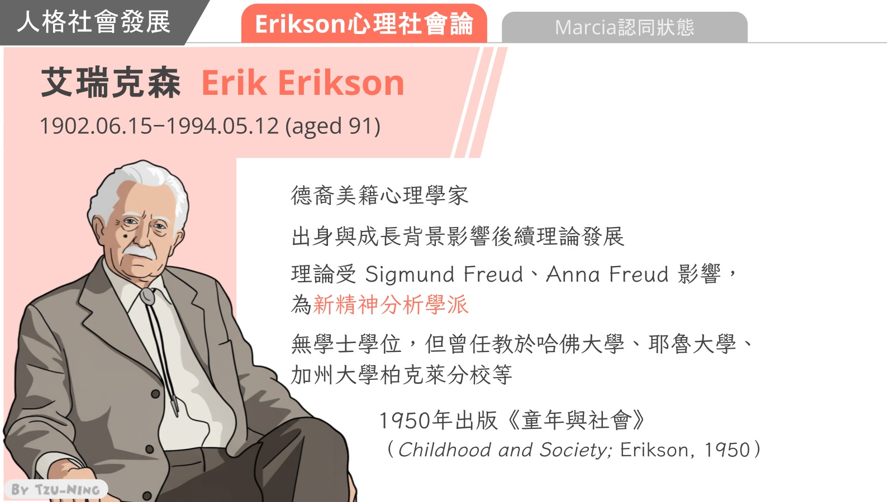
Erikson 的八個心理社會階段
Erikson 理論的基本要義如下：
- 人的一生需經過八個心理社會階段，每個階段都有不同的危機或待解決的問題，各階段待解決的關鍵課題稱為心理社會危機（psychosocial crisis）。
- 每一時期因化解危機的程度不同，其自我發展狀態處於兩極之間：較接近正向極端者，可視為發展順利；較接近負向極端者，可視為發展障礙。
- 各階段的心理社會危機依序出現，彼此相關。前一階段的發展會影響後續危機的處理；早期議題也可能在往後持續影響個體。
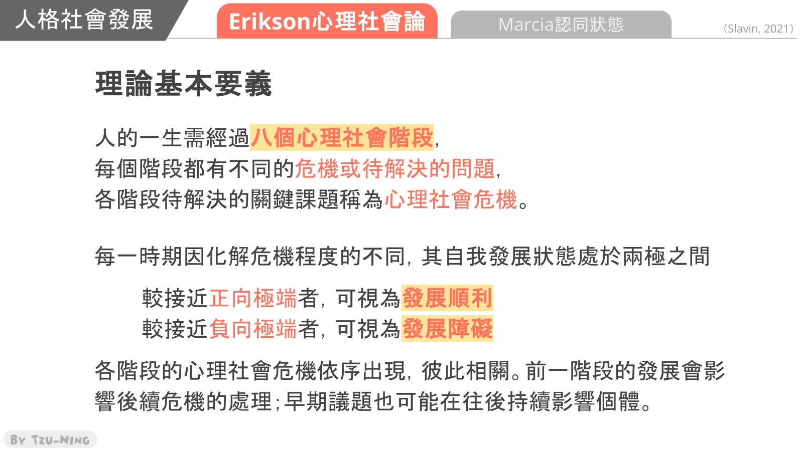
以下依序說明八個階段。課堂以一位虛構人物「小孜」的一生串起各個階段。
1. 信任 vs. 不信任（出生–18 個月）
基本信任（trust）是對他人的信任感，以及認為自己值得信任的基本感覺。母親（或母職代理人）是滿足嬰兒食物與情感需求的人。嬰兒在主要照顧者穩定且敏感的回應中，逐漸形成對他人與環境的基本信任；照顧不一致或需求長期未獲回應，則可能增加不信任感（mistrust）。這些早期經驗會影響後續的發展，但不代表結果必然固定。例如新手媽媽起初猜不透嬰兒為什麼哭，後來學會辨識他是餓了、尿布濕了還是想被抱，並穩定回應；嬰兒逐漸知道「我需要的時候，媽媽就會來」，便建立起基本信任感。
2. 獨立自主 vs. 羞愧懷疑（18 個月–3 歲）
這個年紀的幼兒已會走路、會說一些話，常說「不要」、凡事堅持「我自己來」。家長可能以為孩子的叛逆期太早來了，其實幼兒是在追求獨立自主（autonomy）。照顧者應有足夠的彈性，一方面允許孩子自由探索、自己完成一些事，一方面在旁提供協助。這時期幼兒的肌肉控制還不好，吃飯常弄得滿地都是；若父母過度嚴厲、限制太多，例如搶過來說「你就是做不好，我來」，幼兒會產生無力感與無能感，開始害怕嘗試、懷疑自己的能力，走向羞愧懷疑（shame and doubt）。若給予選擇與練習的機會，讓幼兒累積「我自己會」的成就感，便會走向獨立自主。
3. 主動探索 vs. 罪惡感（3–6 歲）
這是上幼兒園的時期，而這個年紀最大的任務就是「玩」。溜滑梯、玩遊戲、跑跑跳跳，都是在探索世界，主動探索感（sense of initiative）與日俱增。若兒童主動探索、嘗試時，父母給予嚴厲的懲罰，兒童便會對自己的探索慾望產生罪惡感（guilt）。例如孩子為了玩「太空探險」剪壞媽媽珍藏的布料，若只是被責罵「怎麼這麼愛搗亂」，可能會覺得自己不該有這些想法；若父母教導他尊重他人物品，同時規劃一個可以自由發揮的「創造角」，讓他在適當的界線內探索，就會朝正向發展。
4. 勤奮努力 vs. 自貶自卑（6–12 歲）
上小學之後，生活有了固定的作息與規則，也有各種學科，連體育、美術都會打成績，兒童開始在意自己的學業表現，並與同學比較。兒童若能成功完成事情，就會帶來勤奮努力的感覺（a sense of industry），覺得自己和自己的能力不錯；若是失敗，則會產生負向的自我形象，即自貶自卑（inferiority），這種無能感會阻礙未來的學習。這個階段的關鍵，是幫助兒童建立一點成就感，例如發掘並肯定他在其他領域的長處與進步。
5. 自我認同 vs. 角色混淆（12–18 歲）
這是國高中的青少年時期，也是 Erikson 最重視、一生都在追問的階段：「我是誰？」此時生理機能快速改變，又面臨求學與就業的抉擇，青少年需要質疑並重新定義先前建立的認同。他們會嘗試不同的穿著風格、參加各種社團，從中尋找自己的定位。正向發展是自我認同（identity），若一直找不到自己是誰，則會角色混淆（role confusion）。
Erikson 認為，自我認同是一種重新整合：將自我（ego）、自己的資產（先前各階段危機的成功化解），以及目前這個階段的機會加以整合的結果。青少年常會迷惘：「我該成為大家期待的人，還是追求自己想要的生活？」其實兩者不一定互斥。這個時期最重要的兩個向度是探索（exploration）與投入（commitment），也就是下一節 Marcia 理論的基礎。
6. 友愛親密 vs. 孤獨疏離（成年前期）
成年前期大約是大學、研究所到 40 歲左右。這個時期的人已準備好與他人建立信任與親密的關係，對象不一定是伴侶，也可以是朋友，或是競爭與合作的夥伴，這是友愛親密（intimacy）。若未能建立這樣的關係，或一再嘗試而失敗，便會退縮而孤獨疏離（isolation）。例如習慣獨來獨往的人，在重感冒時收到同事送來的粥，開始願意敞開心房與人分享生活，就是朝友愛親密發展。
7. 積極生產 vs. 自我頹廢（成年中期）
成年中期大約四、五十歲到六十歲，通常已累積相當的工作經驗，開始需要帶領新人。積極生產（generativity）是指願意扶持與引導下一代、提攜後進，對家庭有責任心、對社會有貢獻感。若停止成長，則會產生停滯與人際貧乏的感覺，最後導致自我頹廢（self-absorption）。例如一位任教二十年、逐漸失去熱情的教師，在指導實習教師的過程中重新感受到工作的意義，就是走向積極生產。
8. 完美無憾 vs. 悲觀絕望（成年後期）
成年後期通常已經退休，長輩常會回顧過去的人生。若能接受自己一生的成就、失敗與極限，即使有遺憾，也覺得這一生走過的路都有意義，便會產生完美無憾（integrity）的完整感；不一定是完美，而是完整。若懊悔過去、悔恨自己的生活何以變成這樣，則會產生悲觀絕望（despair）。
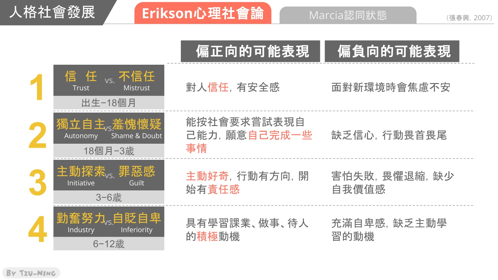
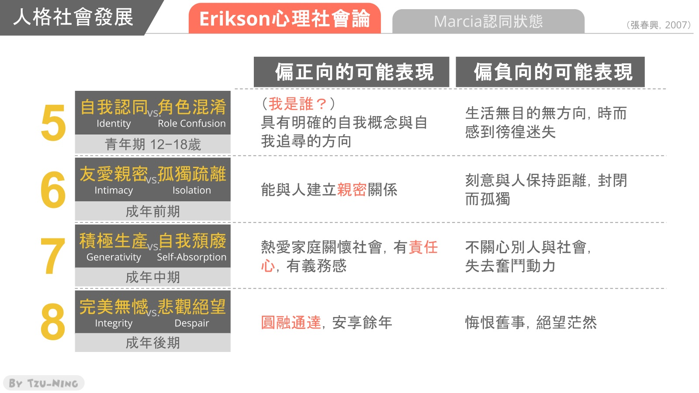
判斷題目屬於哪一個階段時，先找出對象的年齡，再想該階段的發展任務。例如 10 歲的兒童屬於國小階段，面對的是勤奮努力 vs. 自貶自卑，教師能幫助他的，是讓他得到成功完成各種工作的經驗，而不是給予獨立完成工作的機會（那是獨立自主階段的任務）；國中生面對的是自我認同（又譯自我統合）vs. 角色混淆，學校實施生涯探索測驗，就是在協助學生達成自我認同。
Erikson 理論的限制
Erikson 的階段論後來受到一些質疑：
- 特定年齡出現特定危機？ Erikson 持階段論，但實際上一個人可能同時面對多個危機。例如許多大學生同時還在自我認同與友愛親密兩個階段的任務中學習。
- 不同社會文化群體對危機的感受不同。 Erikson 的理論強調個人危機，但華人文化較偏集體主義，也強調與社會他人的互動。
- 透過觀察而推論理論，各階段的界線與固定順序不易完整驗證。 八個階段除了來自 Erikson 本人的人生經歷，主要是透過觀察而得，因此被質疑缺乏實證支持。
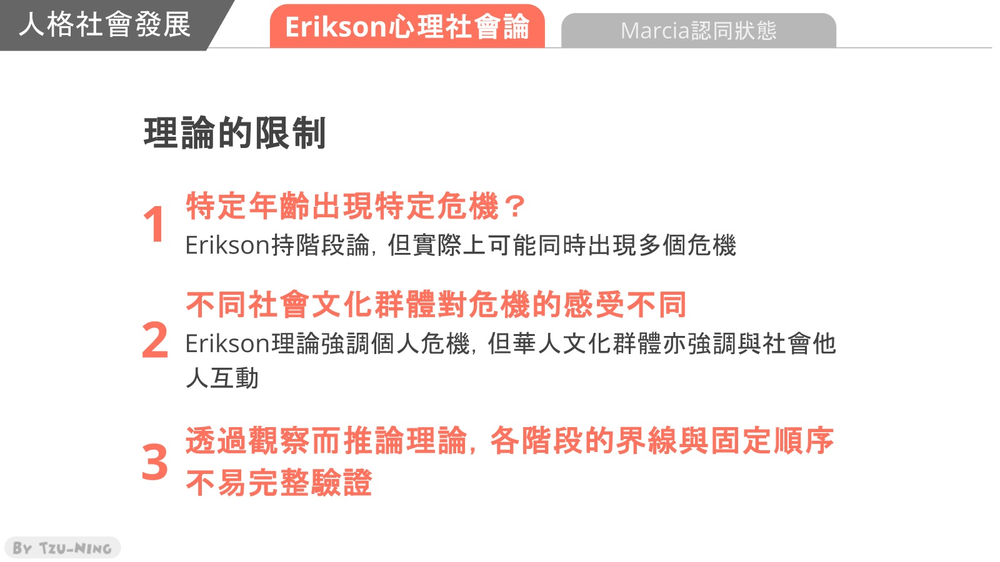
Marcia 的四種認同狀態
馬西亞（James Marcia）特別關注 Erikson 的第五個階段，對「自我認同」做了補充：認同並非只有「有」或「沒有」，而是可以分成四種認同狀態（identity statuses）。Marcia 的概念雖然簡單，卻是教師資格考試中經常出現的內容。
- 早閉型認同（foreclosure）：過早建立認同，而且是以父母的選擇為基礎，而非來自自己的選擇。fore 是「提早」，closure 是「關閉」，也就是很早就把其他可能性關起來了。例如高一學生說，全家族的醫師已經能組成一間醫院，只差婦產科，所以他要念醫學系。
- 迷失型認同（identity diffusion）：沒有一定的職業方向，對任何意識型態都不投入，對未來的目標和方向幾乎沒什麼進展，在學校顯得渾渾噩噩。
- 未定型認同（moratorium，又譯認同遲滯）：開始試驗不同的職業與意識型態，但尚未做最後的投入；已經在嘗試、認識不同的方向，但還沒決定。
- 定向型認同（identity achievement）：探索過不同可能後，對職業與意識型態已做出明確的決定，而且是在自主自由的狀態下做出這些決定；也就是探索過了，也決定方向了。
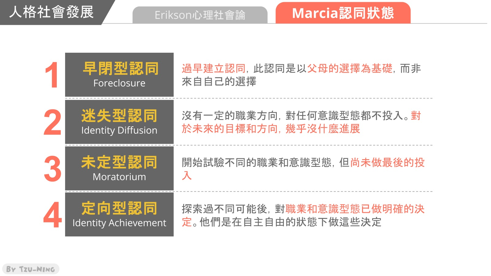
四種狀態可以用兩個向度來區分：橫軸是探索（exploration），有些書寫作「危機」，意思相同，指是否經歷過探索；縱軸是承諾／投入（commitment），指是否已做出最後的決定。
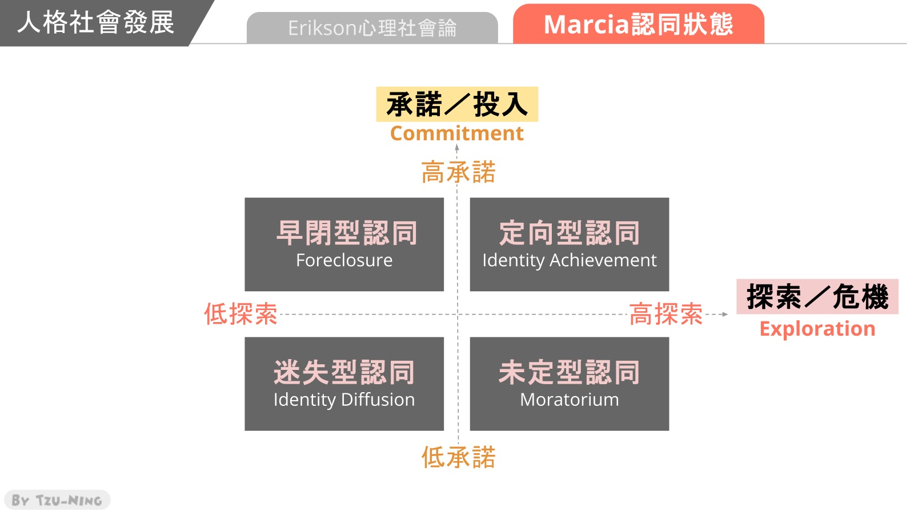
幾個常見的判斷重點：
- 題目中的人「想繼續探索再決定」、正在做職業興趣測驗或與輔導教師討論但尚未決定，屬於未定型。
- 早閉型的學生多半被動接受父母的安排，輔導時要考量的是：這樣的安排未必符合他自己的興趣。模仿父母者通常是早閉型，而非定向型。
- 在傳統、尚未工業化的社會，接受父母安排的早閉型青少年，適應反而可能較好；若要與父母抗爭，生活通常比較辛苦。
- 自尊最低的通常是迷失型；迷失並非因為過度投入，而是既沒有探索也沒有投入。
- 定向型須經歷尋找、選擇及投入的歷程。
Piaget 的道德發展：從他律到自律
道德發展的第一位學者，是上週介紹過的 Piaget。他在以臨床晤談研究兒童認知的過程中，發現兒童如何判斷對錯，與其認知發展密切相關。Piaget 探討兒童如何理解遊戲規則、行為意圖、責任與公平，認為兒童的認知發展，以及與成人、同儕的互動，都會影響其道德判斷。1932 年，他出版《兒童的道德判斷》（The Moral Judgment of the Child），書中設計許多問題和故事來詢問兒童，例如：
- 「玩彈珠的遊戲規則是從哪裡來的？可不可以修改？」年紀較小的兒童會說規則一旦定了就不能改；年紀較大的兒童則會說，只要一起玩的人都同意，規則就可以改。
- 「小明幫媽媽收拾碗筷時，不小心打破了三個碗；小華發脾氣，故意摔破一個碗；誰比較不乖呢？」年紀較小的兒童會說小明比較不乖，因為他打破的碗比較多；年紀較大的兒童則會注意到動機，認為故意摔破碗的小華比較不乖，小明是在幫忙，情有可原。
- 「大中到果園偷水果，園主來了，他急忙逃走，走過一座橋時，橋卻斷了。如果大中沒有偷水果，橋會不會斷？」年紀較小的兒童會認為，大中沒有偷水果，橋就不會斷，因為他做了壞事才被老天爺懲罰。
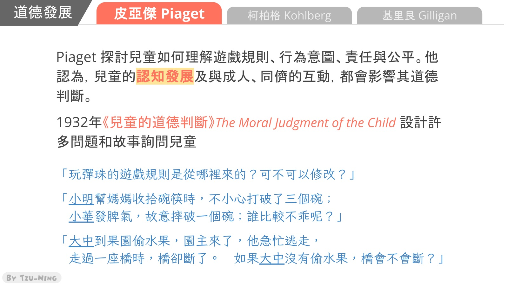
根據這些訪談，Piaget 認為兒童的道德發展是從他律道德到自律道德，分界大約在 10 歲左右。這種轉換並非一夕之間完成，而是逐漸由偏重他律轉為偏重自律。
他律道德
他律道德（heteronomous morality）又稱為道德實在論或約束道德。「他律」是指對錯決定於他人所訂定的規則：兒童較容易把規則視為成人制定、不可任意更改。判斷過失時，可能較重視可見的結果而低估行為的意圖，例如認為打破三個碗的小明比較不乖；也可能相信違規會自動招致懲罰，例如認為偷水果的大中才會遇上斷橋。因此，此時期的兒童判斷行為的道德性時，是根據行為的結果。
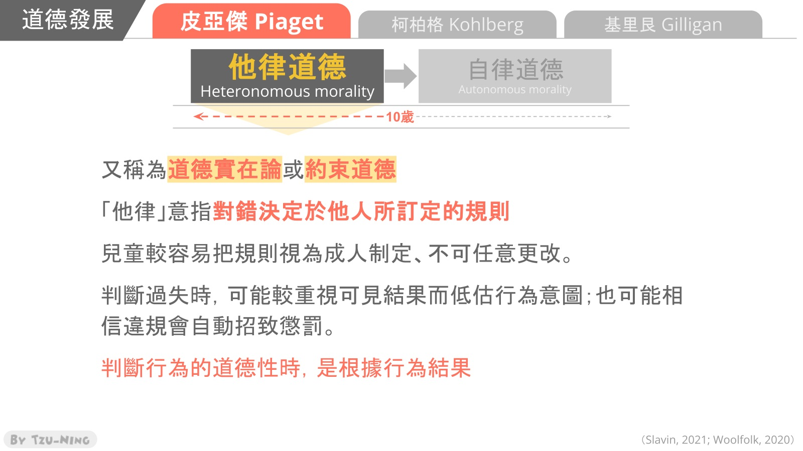
自律道德
到了自律道德（autonomous morality），隨著同儕合作與觀點取替增加，兒童逐漸理解規則是共同的約定，可以透過協議修改；判斷責任與公平時，也較能考量行為的意圖與情境。文獻上有很多研究支持，兒童的道德判斷是由著重結果進展到著重意圖。
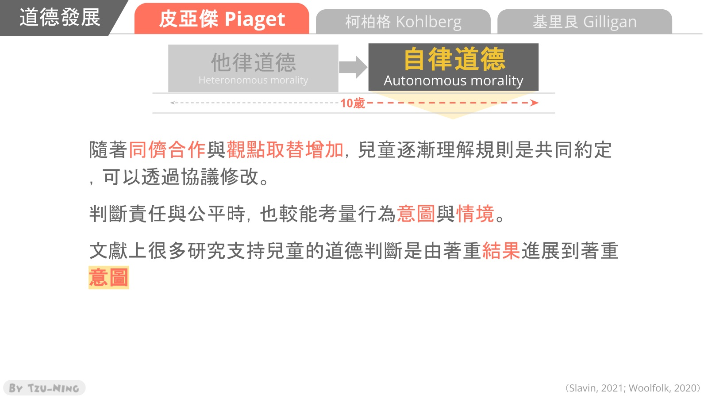
有些參考書會在他律之前再加上無律期（anomy）：約 4 歲以前的兒童尚無穩定的規則意識，「我想怎麼玩，就怎麼玩」。因此有時會看到「無律、他律、自律」三個階段的說法；Piaget 理論的主體則是從他律到自律。三者可以這樣對照：無律期「我想怎麼玩，就怎麼玩」；他律期服從權威與規則，「老師說不可以，就是不可以」；自律期理解規則、意圖與公平，「他不是故意的，不能只看結果」。
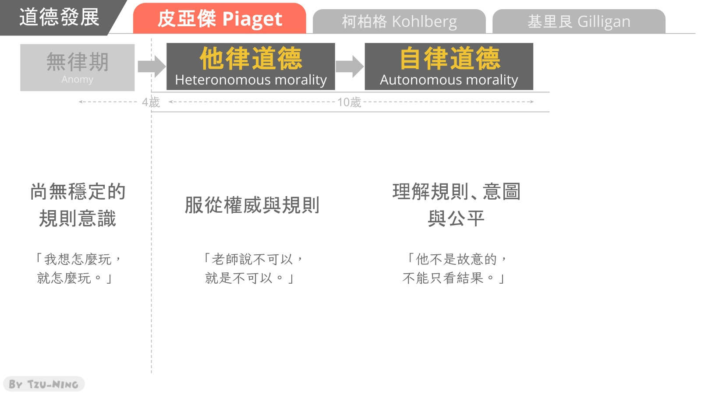
Kohlberg 其人與道德兩難情境
談道德發展，最主要的學者是柯柏格（Lawrence Kohlberg，1927–1987）。他是美國心理學家，曾任教於芝加哥大學心理學系與哈佛大學教育研究所。他之所以重視道德發展，與他年輕時的經歷有關。
Kohlberg 高中畢業後沒有直接上大學，而是上了一艘偷運猶太難民前往巴勒斯坦的船擔任船員。當時英國封鎖了巴勒斯坦的海岸，船在將抵達時被攔截，年約十九歲的 Kohlberg 被送往賽普勒斯的拘留營。他在那裡目睹猶太難民的處境，不斷思考：為什麼有人會對與自己毫無關係的人做出如此殘忍的事？又為什麼在大家都挨餓、生活如此困苦的情況下，仍有人願意把食物分給別人？他自己違反封鎖、觸犯法令去幫助別人，這樣做究竟對不對？這些經歷開啟了他日後對「什麼是對、什麼是錯」的研究。
回到美國後，Kohlberg 只用一年就讀完大學。求學期間讀到 Piaget 的道德發展研究，他深感興趣，也想訪談兒童，但他使用的不是 Piaget 的故事，而是自己設計的道德兩難情境（moral dilemmas），並以此完成博士論文，提出道德發展的分期。他的研究主力在道德推理，是將 25 年前 Piaget 對兒童道德發展的詮釋加以延伸。1971 年，他在中美洲的貝里斯進行跨文化研究時感染熱帶寄生蟲病，此後長年與疾病和憂鬱奮戰；1987 年，59 歲的他離開醫院後失蹤，數月後才被尋獲遺體，據信是結束了自己的生命。
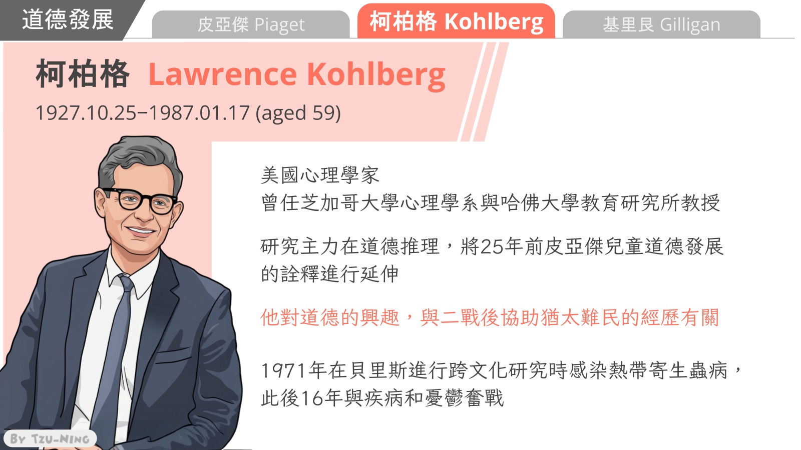
理論要點
- Kohlberg 關注的是個體面對道德兩難問題情境時的推理理由。
- 道德判斷並不單純是一個是非對錯的問題，而是在面對道德問題情境時，個人從人、己、利、害以及社會規範等多方面綜合考量所做的價值判斷。
- 三期六段描述的是道德推理的架構；不能只由年齡或最後的選擇，判定一個人所處的階段。
- 推理階段不直接等同實際的道德行為。
- 兒童能從某一階段進入下一階段，是和比自己高一兩個階段的人互動的結果。
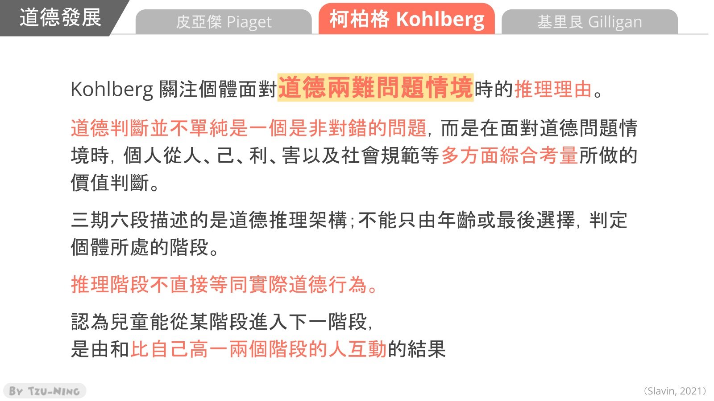
海因茲偷藥救妻
Kohlberg 最有名的道德兩難情境是海因茲兩難（Heinz dilemma），中文有「漢斯偷藥」「海因茲偷藥」「張先生偷藥」等不同譯法，指的都是同一個故事：
有一名婦女罹患某種特殊的癌症，生命垂危。醫生認為有一種新發現的藥物可能救她一命。這種藥由當地一位藥劑師研發，製藥成本約為 200 美元，藥劑師卻開價 2,000 美元，是成本的 10 倍。婦女的丈夫海因茲四處向親友借錢，卻只籌到 1,000 美元。他向藥劑師說明妻子的病情，請求以較低的價格購買，或先付一部分、其餘日後補足，但藥劑師拒絕了：「不行，這是我研發的藥，我要靠它賺錢。」海因茲走投無路，開始考慮闖入藥房偷藥來拯救妻子。海因茲該偷藥嗎？
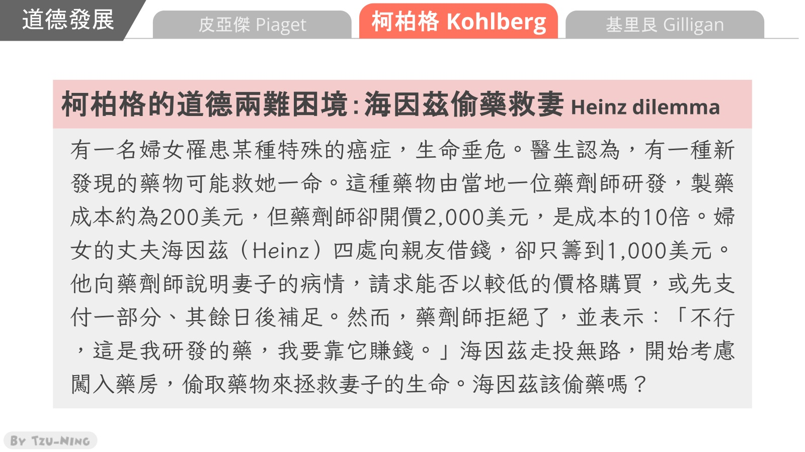
Kohlberg 在意的不是受試者回答「該」或「不該」，而是背後的理由；他會一路追問，以找出受試者最核心在意的是什麼。例如有人認為應該偷藥，因為生命最重要，但又認為偷藥之後仍應去坐牢，因為社會秩序也很重要；既然偷藥是對的事，為什麼做了對的事還要被關？這顯示他心中的排序，社會秩序可能比想像中更靠前。不同的理由，會落在不同的道德發展階段。
Kohlberg 的三期六段論
Kohlberg 將道德發展分為三個時期，每個時期下再分兩個階段，共三期六段；因此他的理論屬於階段論（不連續論）。三個時期的名稱可以從中間記起：中間的習俗道德期（conventional）與規則、秩序有關；在它之前的是前習俗道德期（preconventional），之後的是後習俗道德期（postconventional）。
前習俗道德期以自己為判斷的中心。第一階段避罰服從取向為避免懲罰而服從權威或規則，行為的好壞取決於會帶來什麼後果；第二階段相對功利取向以自身的需求或利益為首要考量，也可能進行互惠交換，例如「這次考試我借你看，下次你也要借我看」。
習俗道德期開始在意他人與社會的規範。第三階段尋求認可取向又稱乖男巧女取向（good boy／good girl），重視重要他人的認可，希望別人覺得自己是好孩子；第四階段法律秩序取向（社會秩序取向）重視履行義務、遵守法律，即使認為某條法律不好，在修改之前仍應遵守。
後習俗道德期則能從更高的層次看待規範。第五階段社會契約取向理解法律與制度是共同的約定，並重視個人權利與公共利益，只要社會有共識，法律也可以修改；第六階段普遍倫理取向依據良心與可普遍適用的倫理原則進行判斷，不過這個階段的實證地位仍有爭議。
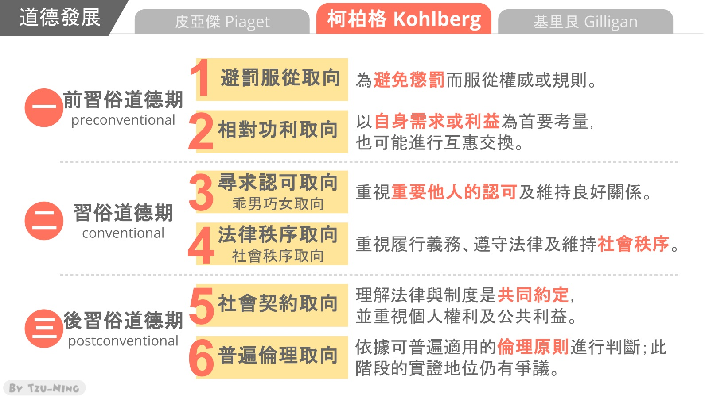
並非每個人都會發展到第五、六階段，這與年齡的關係也沒有那麼大；六十歲的人也不一定進入後習俗道德期，多數成人仍落在第三、四階段。Kohlberg 的理論並不是說階段越高的人越善良，它分類的是一個人如何進行道德推理。
以海因茲兩難練習判斷
課堂以海因茲兩難的七種回答練習判斷取向。判斷的線索都在理由裡：「偷藥會被抓、會受罰」是避罰服從；「救回妻子後，兩人還能彼此照顧」看的是利大於弊，屬於相對功利；「否則親友會覺得他不是好丈夫」與「大家都認為好人不該偷東西」都在乎別人怎麼看，屬於尋求認可；「若人人都因個人理由違法，社會秩序將難以維持」是法律秩序；「救人符合保障生命的社會共識，不合宜的法律可以修改」是社會契約；「依可普遍適用的正義原則，考量生命與每個人的尊嚴」則是普遍倫理。
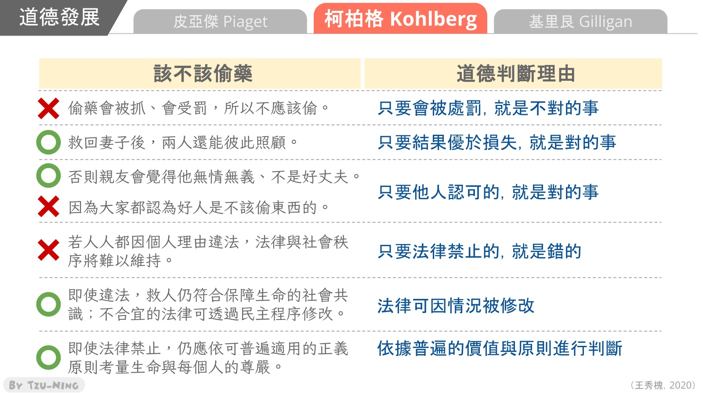
其中尋求認可的兩個回答特別值得留意：一位認為應該偷、一位認為不應該偷，但理由都是希望得到別人的認可，因此都屬於尋求認可取向。外在的行為選擇看似相反，背後的理由卻可能來自同一個取向；判斷時要看理由，而不是看結論。
幾個判斷的例子：因為怕被警察抓到所以不闖紅燈，屬於避罰服從；因為推甄有加分才去做，屬於相對功利；怕別人覺得自己沒愛心、或「身為好朋友就該幫你」，屬於尋求認可；凡事照規定來，屬於法律秩序；取決於良心，則屬於最高的第六階段普遍倫理。國中生特別重視同儕、希望被認可，因此以尋求認可取向最為常見。
Gilligan：女性視角的道德
基里艮（Carol Gilligan，1936–）是美國心理學家，曾任教於哈佛大學，目前任教於紐約大學。她原本與 Kohlberg 同在哈佛的研究團隊，後來對 Kohlberg 的研究提出兩點質疑：
- Kohlberg 早期建立理論的核心研究以男孩為主，女性的經驗與關係脈絡可能未被充分呈現；Gilligan 認為女性的道德與男性不太一樣。
- 面對假設性的兩難問題，一般人都能說出一套道德推理，甚至可能推理到第五、六階段；但真正遇到需要做出道德判斷與道德行為的情境時，真的會照著說的去做嗎？
因此，Gilligan 訪談了正面臨是否墮胎抉擇的懷孕女性：研究對象是女性，面對的也是真實的道德問題。這項研究寫成了《不同的聲音》（In a Different Voice，1982）。
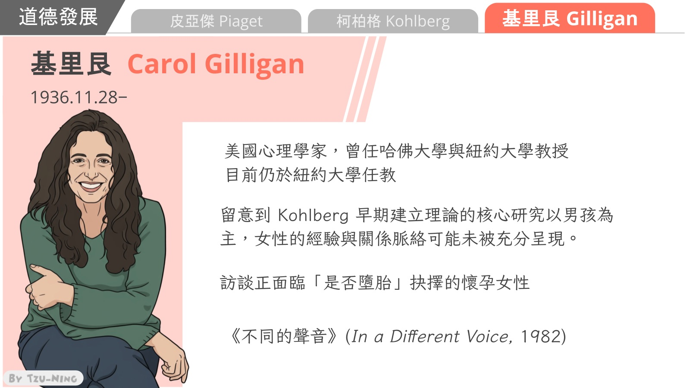
Gilligan 認為，男性的道德判斷以個人權利為主，女性則著重個人對他人的責任，因此她的觀點常被稱為關懷倫理（ethics of care）。需要特別強調的是，這是 Gilligan 的觀點；目前的研究並未支持道德判斷有這樣的性別差異。她提出女性道德發展的三個層次：
- 個人生存的道德（orientation to individual survival）：重視自己。對的事情是有利於自己的事；順從規約以獲得酬賞、避免懲罰，關注自我及生存。
- 自我犧牲的道德（goodness as self-sacrifice）：重視別人。關注對他人的責任與照顧，為滿足他人的需求而犧牲自己。
- 均等不傷害的道德（morality of nonviolence）：自己的需求與他人的需求同樣重要，希望做出的判斷與決定不會讓任何人受到傷害，也沒有人需要犧牲。
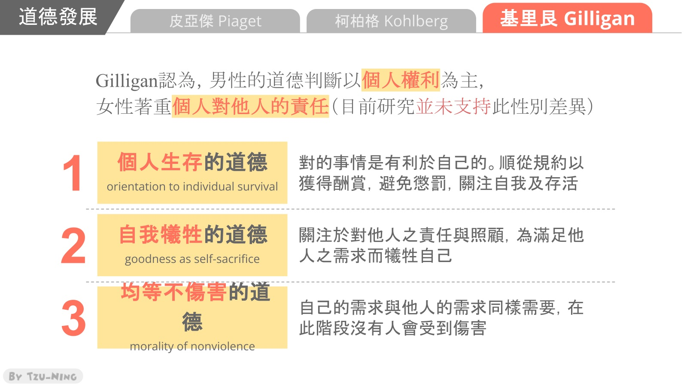
學前階段：同儕、利社會行為與遊戲
最後依學前、小學、中學三個階段，整理社會情緒的發展。每個階段都可以先對照 Erikson 的心理社會階段：學前階段（幼兒園）的主要任務是遊戲，透過遊戲探索世界，對應的是第三期「主動探索 vs. 罪惡感」。
- 同儕關係（peers）：同儕之間的衝突，讓兒童了解別人的感覺與觀點不一定和自己相同；與同儕一起遊戲，有助於幼兒克服 Piaget 所說前運思期的自我中心。
- 利社會行為（prosocial behavior）：指兒童自願對他人表現照顧、分享、安慰與合作等行為，例如幼兒問媽媽「你怎麼了？不舒服嗎？」影響因素中，最重要的是父母的管教方式，特別是強調兒童的行為會對別人產生什麼影響；其次是兒童與成人的互動方式，例如成人表示希望兒童關心別人、表明攻擊不被接受並提出替代方案、將兒童的良好行為歸因為其正面特質。
- 遊戲（play）：遊戲讓兒童有機會練習語言、認知、技能與社會技能，並有助於人格發展。學前兒童與同儕的互動方式，與他們和父母的互動方式有關：有父母關愛和溫暖的孩子，較容易有社會性假裝遊戲，也較能解決同儕衝突。
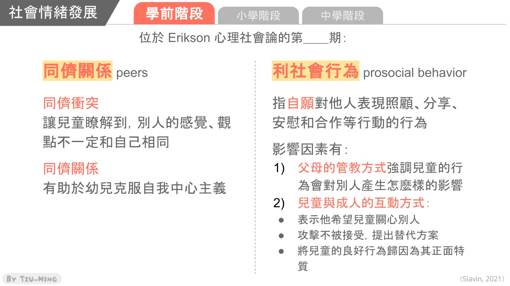
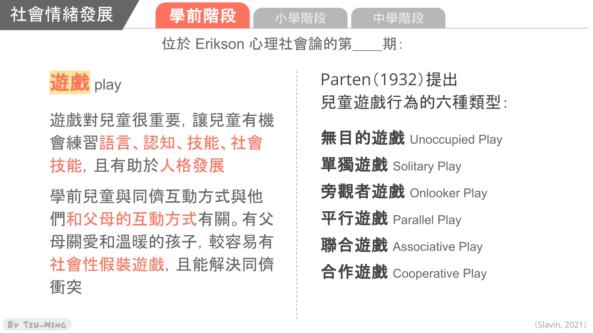
Parten 的六種遊戲類型
Parten（1932）依社會參與的多寡與遊戲的精緻程度，將兒童的遊戲行為分為六種類型，從非社會性到社會性依序為：無目的遊戲（unoccupied play）、單獨遊戲（solitary play）、旁觀者遊戲（onlooker play）、平行遊戲（parallel play）、聯合遊戲（associative play）與合作遊戲（cooperative play）。前三種屬於非社會性活動：無目的遊戲不太像典型的「玩」，嬰兒只是隨意揮動手腳，探索自己的身體如何移動；單獨遊戲是自己玩、專注在自己的活動上，對培養專注力與想像力很重要；旁觀者遊戲則是在旁邊看別人玩、不加入，是開始學習社交規則的一步。後三種開始與他人有關，差別在於互動的程度。
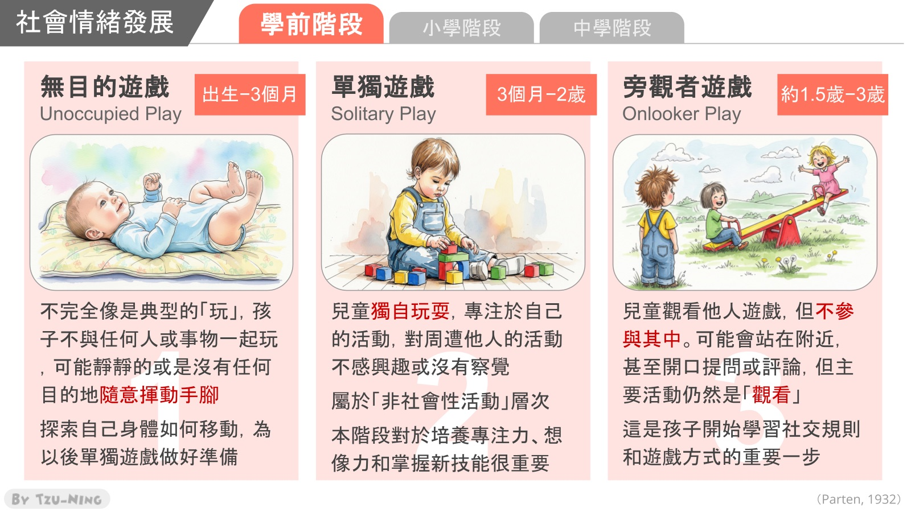
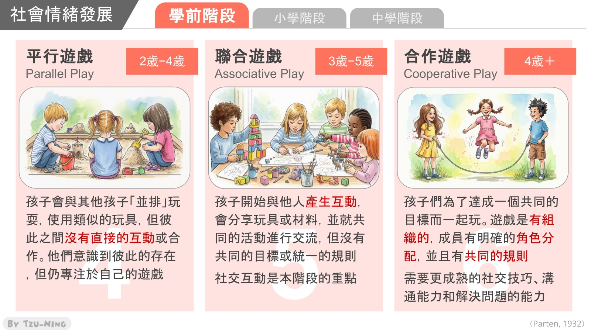
較容易混淆的是旁觀者、平行與聯合遊戲。在公園裡站在旁邊一直看別人玩、可能會發問但沒有要加入的，是旁觀者遊戲；在沙坑裡各自拿著自己的鏟子挖沙、知道旁邊有人但各玩各的，是平行遊戲；向旁邊的孩子借盤子、借彩色筆，彼此有互動但沒有共同規則，是聯合遊戲；一起玩扮家家酒，有人當老闆、有人當客人，有角色、有規則，則是合作遊戲。
投影片上的年齡只是大約的發展時間。六種遊戲沒有高下之分，只是與他人互動的程度不同；孩子會在不同類型之間轉換，已會合作遊戲的孩子也可能回到單獨遊戲，因此孩子一個人玩，不一定代表他比較不成熟。
小學階段：自我概念、自尊與同儕接納
小學階段對應 Erikson 的第四期「勤奮努力 vs. 自貶自卑」。因為有了社會比較，這個階段特別需要了解以下幾個概念。
自我概念與自尊
- 自我概念（self-concept）：對自己的優缺點、能力、態度與價值等的知覺。
- 自尊（self-esteem）：對自己的特徵、能力與行為等的評價。
兩者的差別在於有沒有評價。例如「我的空間能力比較弱」是自我概念；若進一步覺得「空間能力弱這件事很糟糕」，加上了好壞的評價，就涉及自尊。小學低年級的兒童描述自己時，就開始著重較為內在而抽象的特質，例如聰明和善良。
社會比較（social comparison）是將自己與他人做比較的歷程，目的在蒐集訊息，並對自己的能力、態度與行為做出評價和判斷。小學二、三年級時，學業有困難的兒童開始傾向形成較差的自我概念，進而產生惡性循環：成績差的學生到了小學高年級和中學，容易有較差的學業自我概念，又進一步帶來較差的學業表現。因此，人格和社會發展最重要的是接納。
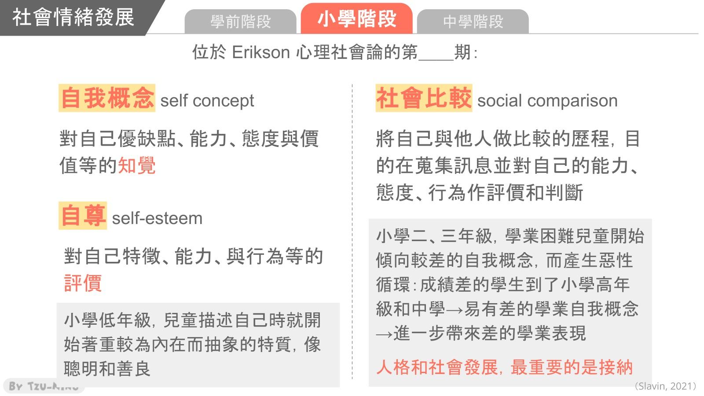
同儕關係與同儕接納
小學階段同儕的重要性逐漸增加。兒童會將自己的能力和技能與他人做比較；同儕團體的成員也彼此教導不同的世界，兒童透過態度和價值的分享，選擇並形成自己的態度與價值。小時候常聽到的是「爸爸說、媽媽說、老師說」，到了小學會越來越常聽到「某某同學說」，到了中學就幾乎只剩「同學說、朋友說」了。
能否被同儕接納是很重要的指標：同儕拒絕與後續學業、行為及情緒適應的困難有關，可視為風險指標。被拒絕的兒童有些具攻擊性，有些則過於被動和退縮，兩者似乎都最容易有適應問題；後者常成為校園霸凌的受害者。
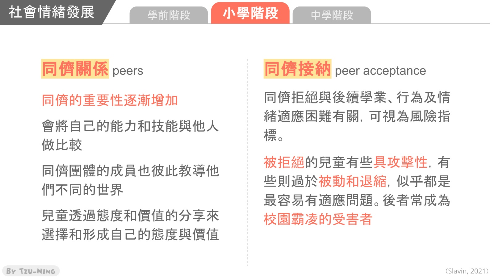
社交計量法
研究上可以用社交計量法（sociometric methods）了解同儕接納的情形，也就是讓全班同學進行同儕提名，例如：「班上哪三個同學是你最喜歡和他在一起的？」「班上哪三個同學是你最不喜歡和他在一起的？」由於要彙整全班資料，這必然是記名問卷。依「最喜歡」與「最不喜歡」被提名的次數，可以把學生分為五群：
- 受歡迎型（popular）：很多人喜歡、很少人不喜歡。
- 被拒絕型（rejected）：很多人不喜歡、很少人喜歡。
- 爭議型（controversial）：很多人喜歡，也很多人不喜歡。
- 被忽略型（neglected）：喜歡與不喜歡都很少人提到，彷彿在班上不存在。
- 普通型（average）：介於中間。
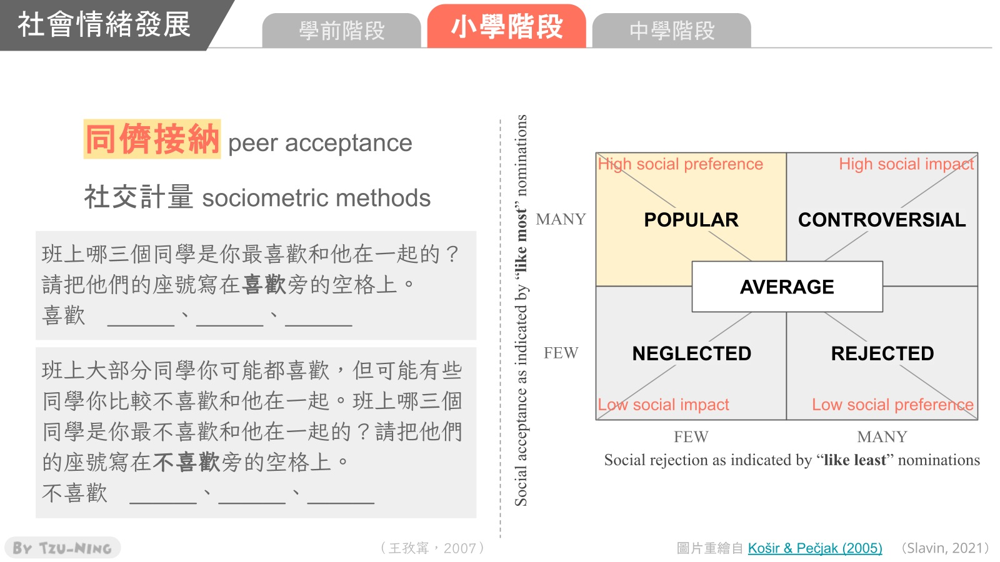
需要特別提醒：社交計量是研究上使用的方法，可用來分出不同類群、進行統計分析，但不建議一般教師自行運用於班級經營，以免因不當使用而造成學生標籤化及人際傷害；更不應讓學生知道自己被歸為哪一類。若要協助班上被拒絕的學生，應採用其他方式。
中學階段：自我認同、自尊與社會關係
中學階段對應 Erikson 的第五期「自我認同 vs. 角色混淆」，最重要的議題就是自我認同。
自我認同的發展
青少年已進入 Piaget 的形式運思期，能夠考慮各種可能性，也因此發展出反思性（reflectivity）：對自己的內心活動加以思考、並對自己加以分析的傾向。由於能想到自己有各種可能，青少年容易對自己感到不滿，會批評自己的個人特徵、喜歡與他人比較，並試圖改變現況。他們也開始了解，自己的想法、感覺與他人的行為表現之間有差異。青年期人格發展最重要的課題是：「我是誰，我到底是怎樣的一個人？」
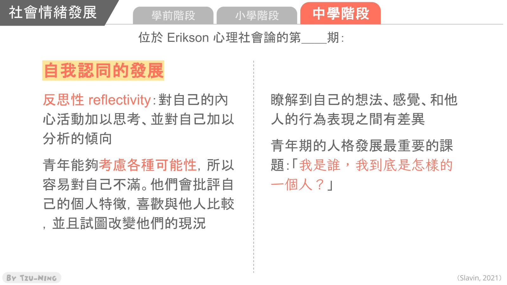
自我概念、自尊與情緒發展
自尊在進入小學高年級或國中、青春期剛開始時最低。早熟對女生的自尊較不利：發育較早的女生容易對自己的身體形象沒有自信，例如駝背、夏天也要穿外套遮掩。男生方面，過去常認為早熟較有利，例如早熟的男生長得高、打籃球很有自信；但近年的研究結果並不一致。整體而言，青春期的自尊或自我價值感，受身體外表的影響最大，同儕的社會接納次之。
從小學轉到國中、再到高中，青少年會感受到相當大的壓力，情緒與恐懼也是這個時期的重要課題。前青年期的青少年需要成人的幫助，以了解情緒和恐懼是成長過程中很自然的一部分；即使成人認為這些情緒和恐懼不切實際，也必須讓青少年有機會討論。
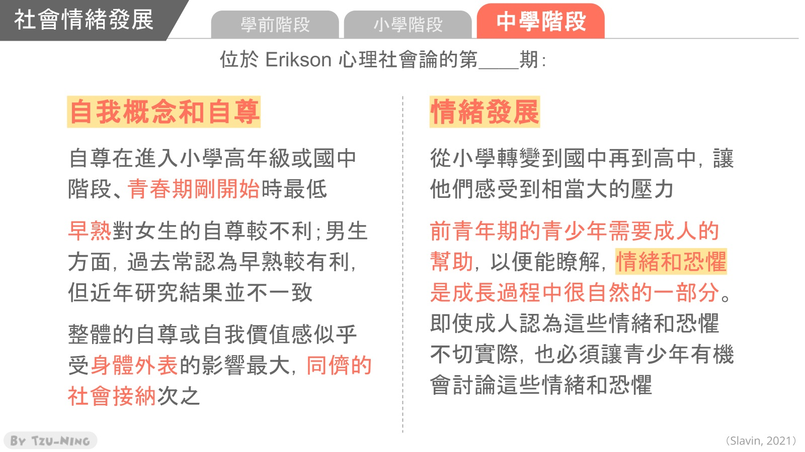
社會關係
社會支持的來源會隨年齡改變：小學兒童主要從父母那裡找到支持；七年級的兒童認為同性別的朋友和父母一樣，都是支持的來源；到了十年級，同性別的朋友才是社會支持的主要來源。青年期對小團體的忠誠雖然常見，但不一定長期或穩定。受歡迎、廣受同儕接納的青少年，較常以正向方式解決衝突，學業能力、利社會行為與領導才能也比較高；被拒絕、較不被接納的青少年則較常有攻擊與反社會行為，學業表現也比較差。
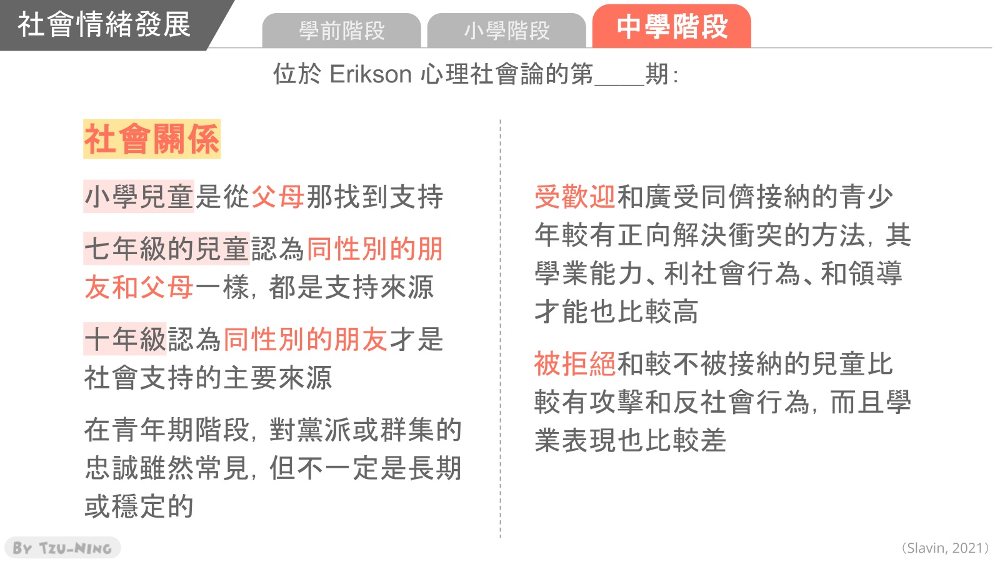
本週重點整理
- Bronfenbrenner 重視生態效度，提出生態系統理論：微系統、中介系統、外系統、大系統，以及後來補充的時間系統；各系統相互依存。
- Erikson 的心理社會發展論將一生分為八個階段，每個階段都有待解決的心理社會危機；他一生追問的問題是「我是誰？」。
- Erikson 八階段：信任、獨立自主、主動探索、勤奮努力、自我認同、友愛親密、積極生產、完美無憾（對應的負向端依序為不信任、羞愧懷疑、罪惡感、自貶自卑、角色混淆、孤獨疏離、自我頹廢、悲觀絕望）。
- Erikson 理論的限制：實際上可能同時面對多個危機；忽略不同文化對危機的感受；各階段的界線與固定順序不易完整驗證。
- Marcia 以探索與承諾兩個向度區分四種認同狀態：早閉型（低探索、高承諾）、迷失型（低探索、低承諾）、未定型（高探索、低承諾）、定向型（高探索、高承諾）。
- Piaget 的道德發展：從他律道德（重結果、服從他人訂的規則）到自律道德（重意圖、規則可經同意而修改），分界約在 10 歲。
- Kohlberg 以道德兩難情境研究道德推理，提出三期六段：前習俗（避罰服從、相對功利）、習俗（尋求認可、法律秩序）、後習俗（社會契約、普遍倫理）；判斷階段要看理由，不是看結論。
- Gilligan 從女性視角提出關懷倫理與三個層次：個人生存、自我犧牲、均等不傷害的道德；但目前研究並未支持道德判斷的性別差異。
- 學前階段重視同儕關係、利社會行為與遊戲；Parten 將遊戲分為無目的、單獨、旁觀者、平行、聯合、合作六種類型。
- 小學階段重視自我概念（知覺）與自尊（評價）、社會比較與同儕接納；社交計量法可用於研究，但不建議一般教師自行運用於班級經營，以免因不當使用而造成學生標籤化及人際傷害。
- 中學階段的核心是自我認同；自尊在青春期剛開始時最低，受身體外表影響最大，同儕接納次之；同性別朋友逐漸成為社會支持的主要來源。
資料來源
- 王孜𡩋，〈社會與道德發展〉課堂講授，2026 年 10 月 22 日。
- 王孜𡩋，〈社會與道德發展〉課堂投影片，國立臺灣師範大學師資培育學院。文中圖片皆取自此投影片。
- 文中引用的研究文獻依投影片標註：Erikson (1950)；Košir & Pečjak (2005)；Parten (1932)；Slavin (2021)；Woolfolk (2020, 2025)；王秀槐 (2020)；王孜𡩋 (2007)；張春興 (2007)。